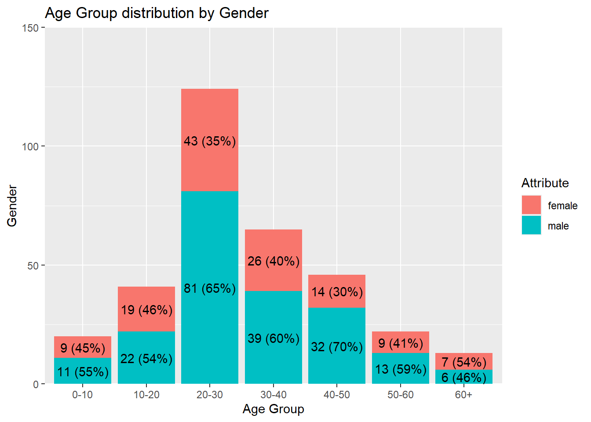
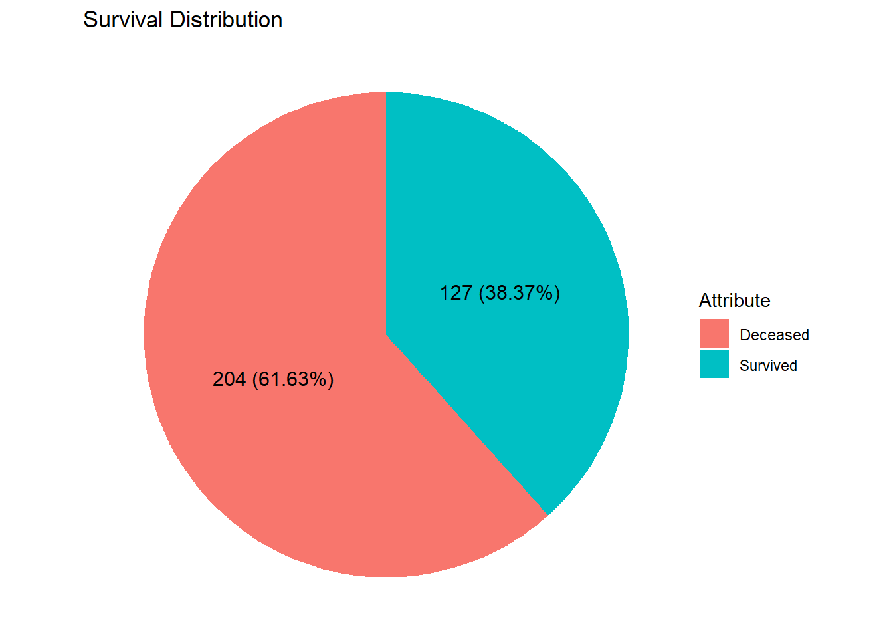

Titanic dataset analysis
0.1 Introduction
Titanic is one of the most famous love stories in film history, with a global box office revenue of USD 2.264 billion. Numerous scenes from the movie remain iconic and are still frequently discussed today. However, we cannot deny that it also portrays one of the most infamous shipwrecks in history, which claimed the lives of thousands and caused many families to lose their beloved members.
The raw dataset was obtained from Kaggle, an open-source data platform. Upon reviewing the dataset, data quality issues were identified in the Cabin, Age, SibSp, and Parch columns. I believe these issues are significant enough to potentially distort the accuracy of the analysis, based on several rounds of testing. As a result, this analysis will focus solely on understanding the passenger structure using the more reliable aspects of the data—specifically, survival status, ticket class, embarkation point, and gender distribution.
The analysis will be carried out base on following methods:
0.2 Body
0.2.1 Dataset Overview
8 Table: Data summary
| Name | Piped data |
| Number of rows | 418 |
| Number of columns | 12 |
| _______________________ | |
| Column type frequency: | |
| character | 7 |
| numeric | 5 |
| ________________________ | |
| Group variables | None |
Variable type: character
| skim_variable | n_missing | complete_rate | min | max | empty | n_unique | whitespace |
|---|---|---|---|---|---|---|---|
| passenger_id | 0 | 1 | 3 | 4 | 0 | 418 | 0 |
| survived | 0 | 1 | 1 | 1 | 0 | 2 | 0 |
| name | 0 | 1 | 13 | 63 | 0 | 418 | 0 |
| sex | 0 | 1 | 4 | 6 | 0 | 2 | 0 |
| ticket | 0 | 1 | 3 | 18 | 0 | 363 | 0 |
| cabin | 0 | 1 | 0 | 15 | 327 | 77 | 0 |
| embarked | 0 | 1 | 1 | 1 | 0 | 3 | 0 |
Variable type: numeric
| skim_variable | n_missing | complete_rate | mean | sd | p0 | p25 | p50 | p75 | p100 | hist |
|---|---|---|---|---|---|---|---|---|---|---|
| pclass | 0 | 1.00 | 2.27 | 0.84 | 1.00 | 1.0 | 3.00 | 3.0 | 3.00 | ▃▁▃▁▇ |
| age | 86 | 0.79 | 30.27 | 14.18 | 0.17 | 21.0 | 27.00 | 39.0 | 76.00 | ▂▇▃▂▁ |
| sib_sp | 0 | 1.00 | 0.45 | 0.90 | 0.00 | 0.0 | 0.00 | 1.0 | 8.00 | ▇▁▁▁▁ |
| parch | 0 | 1.00 | 0.39 | 0.98 | 0.00 | 0.0 | 0.00 | 0.0 | 9.00 | ▇▁▁▁▁ |
| fare | 1 | 1.00 | 35.63 | 55.91 | 0.00 | 7.9 | 14.45 | 31.5 | 512.33 | ▇▁▁▁▁ |
0.2.2 Gender Distribution Overview
#Distribution gender to total sample
mdf %>%
drop_na() %>%
piechart_gg(.,sex,"Attribute","Passenger by Gender") The pie chart above shows that the number of male passengers is approximately twice that of female passengers
0.2.3 Gender Distribution to Each Age Group
#Distribution gender to each age group
alternate1 <- mdf %>%
drop_na() %>%
mutate(age_group = cut(age,
breaks = c(0,10,20,30,40,50,60,82),
labels = c("0-10","10-20","20-30","30-40","40-50","50-60","60+"),
right = FALSE,
ordered_result = TRUE
))
alternate1 %>%
group_by(age_group,sex) %>% #1st layer count base on age_group + sex
mutate(age_group_sex = n()) %>%
ungroup %>%
group_by(age_group) %>%
mutate(count_age_group =n()) %>%
ungroup %>%
select(sex, age_group,count_age_group, age_group_sex) %>%
unique() %>%
arrange(age_group)%>%
barchart_gg_custom(.,age_group,age_group_sex,sex)+
geom_text(aes(
label =
paste0(
age_group_sex,
" (",
round((age_group_sex/count_age_group)*100,0),
"%)"
)
),
position = position_stack(0.5)
)+
labs(
title = "Age Group distribution by Gender",
x = "Age Group",
y = "Gender",
fill = "Attribute"
) +
scale_y_continuous(expand=c(0,0),
limits = c(0,150))
The graph above illustrates that males outnumber females across all age groups, except in the 60+ category, where females slightly surpass males. This trend may suggest that males generally held greater purchasing power during the observed period. Additionally, the highest population concentration falls within the 20–30 age group, followed by the 30–40 group, and so on. A detailed ranking is provided in the section below.
0.2.3.1 Female Ranking by Age Group
0.2.3.2 Male Ranking by Age Group
0.2.4 Ticket Class by Gender
mdf %>%
drop_na() %>%
group_by(pclass, sex) %>%
mutate(sex_count= n(),
pclas= as.character(pclass)) %>%
ungroup() %>%
group_by(pclass) %>%
mutate(pclass_count = n()) %>%
ungroup %>%
select(sex,sex_count, pclass, pclass_count) %>%
unique() %>%
barchart_gg_custom(.,pclass,sex_count,sex) +
labs(
title = "Ticket Class distribution by Gender",
x = "Ticket Class",
y = "Count",
fill = "Attribute"
)+
theme(
plot.title.position = "plot",
plot.title = element_text(margin = margin(b=20)),
axis.title.x = element_text(margin = margin(t=10))
)+
geom_text(
aes(
label =
paste0(
sex_count,
" (",
round((sex_count/pclass_count)*100,2),
"%)"
)
),
position = position_stack(0.5)
) +
scale_y_continuous(expand=c(0,0),
limits = c(0,150))The graph above shows that third-class tickets had the highest number of passengers, followed by first class and then second class.
0.2.5 Ticket Class by Gender and Age Group
alternate1 %>%
filter(sex =="male") %>%
group_by(age_group, pclass) %>%
mutate(age_group_pclass = n()) %>%
select(age_group, pclass, age_group_pclass) %>%
unique() %>%
barchart_gg_custom(.,pclass, age_group_pclass,age_group)+
geom_text(
aes(
label = age_group_pclass,
),
position = position_stack(0.5)
)+
labs(
title = "Ticket Class distribution by Male and Age Group",
x = "Ticket Class",
y = "Count",
fill = "Attribute"
)+
theme(
plot.title.position = "plot",
plot,title = element_text(margin = margin(b=20)),
axis.title.x = element_text(margin = margin(t=10))
)+
scale_y_continuous(expand=c(0,0),
limits = c(0,100))
alternate1 %>%
filter(sex =="female") %>%
group_by(age_group, pclass) %>%
mutate(age_group_pclass = n()) %>%
select(age_group, pclass, age_group_pclass) %>%
unique() %>%
barchart_gg_custom(.,pclass, age_group_pclass,age_group)+
geom_text(
aes(
label = age_group_pclass,
),
position = position_stack(0.5)
)+
labs(
title = "Ticket Class distribution by Female and Age Group",
x = "Ticket Class",
y = "Count",
fill = "Attribute"
)+
theme(
plot.title.position = "plot",
plot,title = element_text(margin = margin(b=20)),
axis.title.x = element_text(margin = margin(t=10))
)+
scale_y_continuous(expand=c(0,0),
limits = c(0,60))0.2.6 Embarkation by Gender
#C - embarked from Cherbourg
#Q - embarked from Queenstown
#S - embarked from Southampton.
mdf %>%
drop_na() %>%
group_by(sex, embarked) %>%
mutate(sex_count = n()) %>%
ungroup() %>%
mutate(embarked = case_when(
embarked == "C" ~ "Cherbourg",
embarked == "Q" ~ "Queenstown",
embarked == "S" ~ "Southampton",
TRUE ~ embarked)
) %>%
group_by(embarked) %>%
mutate(embarked_count = n()) %>%
ungroup %>%
select(sex, sex_count, embarked, embarked_count) %>%
unique() %>%
barchart_gg_custom(.,embarked, sex_count, sex) +
labs(
title = "Embarkation by Gender",
x = "Location",
y = "Count",
fill = "Attribute"
) +
theme(
plot.title.position = "plot",
plot.title = element_text(margin = margin (b=20)),
axis.title.x = element_text(margin = margin (t=10))
)+
geom_text(
aes(
label =
paste0(
sex_count,
" (",
round((sex_count/embarked_count)*100,2),
"%)"
)
),
position = position_stack(0.5)
)+
scale_y_continuous(expand = c(0,0),
limits = c(0,250))The graph above shows that the highest number of passengers embarked from Southampton, followed by Cherbourg, and lastly Queenstown
0.2.7 Survival Distribution
mdf %>%
drop_na() %>%
mutate(
survived = case_when(
survived == "S" ~ "Survived",
survived == "D" ~ "Deceased",
TRUE ~ survived
)
) %>%
piechart_gg(.,survived,"Attribute","Survival Distribution")
The graph above illustrates that the number of passengers who perished in the incident was approximately twice the number of those who survived. Further analysis, as shown in the illustration below, breaks the proportion of fatalities by gender.
0.2.8 Survived Distribution by Gender
mdf %>%
drop_na() %>%
group_by(survived, sex) %>%
mutate(survived_sex = n()) %>%
ungroup() %>%
group_by(survived) %>%
mutate(survived_count = n()) %>%
ungroup() %>%
select(sex, survived, survived_count, survived_sex) %>%
unique() %>%
ggplot(aes(
x= "",
y = survived_sex,
fill = sex
))+
geom_col(width = 1)+
coord_polar(theta = "y")+
theme_void()+
labs(
title = "Survival by Gender",
fill = "Attribute"
)+
geom_text(
aes(
label =
paste0(
survived_sex,
" (",
(survived_sex/survived_count)*100,
"%)"
)
),
position = position_stack(0.5)
)The graph above indicates that nearly all male passengers perished, whereas almost all female passengers survived.
0.3 Conclusion
The dataset above shows that the number of male passengers was approximately twice that of female passengers. This may reflect the societal structure during the Edwardian era, where women had limited access to employment opportunities and, consequently, lower purchasing power to afford a ticket on the Titanic.
Based on embarkation data, it appears that residents from Southampton were relatively wealthier compared to those from Cherbourg and Queenstown, as the number of passengers from Southampton was nearly double the combined total from the other two locations.
Additionally, the distribution of ticket classes reveals an interesting pattern: third-class tickets had the highest concentration, followed by first class, and then second class. This may suggest that the middle class was not a dominant segment in the society at the time.
Lastly, the survivability rate presents a stark contrast between genders—100% of male passengers perished, while 100% of female passengers survived. This suggests that the survival pattern may have been influenced by deliberate planning, where men possibly sacrificed their lives to protect their family members.